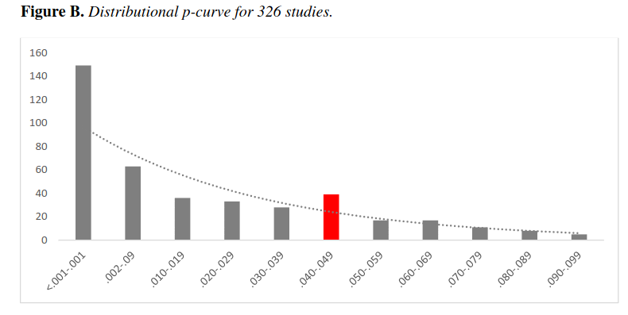

Teaching the Psychology of the Climate Crisis
“It is now incontrovertible that human behavior has led to significant changes in the Earth’s climate, and that these changes will inflict an increasingly significant toll on human wellbeing if they are not reversed. It is also clear that both the opportunities and obstacles to the needed changes are largely psychological and behavioral.”
So began the syllabus for a course that Noah Goodman and I taught together in the Spring Quarter of 2023 at Stanford, titled “Psychology of the Climate Crisis”. Noah and I had discussed teaching such a class for several years, and finally had the chance to do it this year. The group of students in the class ended up being quite small, with four undergradates, two Master’s students, and two PhD students, hailing from six different departments across the university. Fortunately, these were amongst the most engaged and dedicated students that I have ever taught in my entire career. The small size of the class also allowed us to get to know the students very well and give them more agency in designing the class.
The goal of this post is to catalog our experiences in teaching this class, in hopes that they might inspire others to teach similar courses.
Syllabus
Since neither Noah nor myself had any expertise in climate psychology, we decided to work together with the students to put together the syllabus; in essence they got to experience the same kind of educational journey that we did. The overall structure and set of topics that we ultimately covered was decided in the first class session, based on a starting set of topics derived primarily from our reading of the 2009 APA Report on Psychology and Global Climate Change.
The other major event of the first week was a talk to the class by Adam Aron, who happened to be visiting campus that week. Adam has been at the forefront of advocacy around the climate crisis, and has recently written a very nice book on the topic, which includes a substantial amount of discussion around relevant psychological issues.
The first session of each week (Tuesday) was dedicated to student-led discussion of papers regarding the week’s subtopic. The students were also responsible for selecting the papers. Because of the small number of students in the class, we assigned the leadership of the discussion each Tuesday to one or two students. The second session each week was dedicated to working on the final project (discussed below) or to wide-ranging discussions of relevant topics.
| Week | Topic | Readings |
|---|---|---|
| 1 | Overview and introductory talk by Adam Aron | |
| 2 | Perceiving and understanding risk and uncertainty | Weber (2006), Zaval et al., 2014) |
| 3 | Intertemporal choice and future-oriented thinking | Maiella et al. (2020), Kim & Ahn (2019) |
| 4 | Beliefs about climate change: Susceptibility to misinformation and motivated reasoning | Druckman & McGrath (2019), Hart & Nisbet (2012) |
| 5 | Behavior change | Bamberg et al. (2015), Goldberg et al. (2020) |
| 6 | Personal and group identity | Doell et al (2021), Grindal et. al (2023) |
| 7 | Cooperation and social norms | Latkin, et al. (2021) , Constantino, et al. (2022) |
| 8 | Collective behavior (game theory / networks) | Tavoni and Iris (2020) , Diaz et al., (2012) |
| 9 | Psychological interventions to address climate change | Bergquist et al. (2023), Dietz et al. (2009) |
| 10 | Wrapup |
With only ten weeks there were a number of topics that we were not able to cover. One important one, which is the focus of recent work by Adam Aron and colleagues, is the psychology of collective action; that is, what are the psychological factors that drive people to become involved in larger groups and ultimately to become activists. Another important topic that we didn’t touch upon is the psychological impacts of climate change, though this topic came up often in our discussions.
Class project: An open-source book
In planning the class I floated the somewhat off-the-wall idea of having the students work together to generate an open source e-book as their final project. I’ve done this once before and thought the students found it quite fulfilling to generate a resource that will live beyond the end of the quarter.
In the first few weeks we discussed the chapter topics (which aligned roughly with the syllabus topics), and the students worked together to identify potential synergies and overlaps between their intended topics. In Week 5 students submitted a one-page topic proposal with proposed references, which were peer-reviewed by other students as well as by the instructors. An initial draft of the chapter was due in Week 8, which were also peer reviewed, and the final draft was due during Finals Week (Week 11). The chapters will be edited by the instructors over the summer and will be released as an open-source book later this summer.
Major takeaways
A first takeaway for me was reframing where I think the problem really lies. I went into the course thinking about climate change as primarily a problem of behavior change, just like the many other habits that I wrote about in my book, Hard to Break. I still think that the stickiness of behavior is a central problem, but I am less convinced that an understanding of the cognitive mechanisms underlying this stickiness is actually useful for understanding how to actually address the climate crisis. Instead, I have become increasingly convinced that the most important psychological levers are social, particularly regarding social norms. The paper from our syllabus by Constantino et al (2022) lays this out nicely. This is also fairly clear from the meta-analysis of intervention effects by Bergquist et al., 2023, which showed that inerventions based on social comparison had the largest effects.
Second, I am less convinced after the class that psychological interventions are going to be an important part of the solution, even though psychological research is clearly important for understanding the important levers for intervention. This in part driven by the empirical evidence from the aforementoined large second-order meta-analysis by Berquist et al., (2023), which showed that the effects of psychological interventions were moderate at best, and became quite small after bias correction. More importantly, I think that making major changes in behavior is going to require large-scale social norm changes; in particular, in the context of the US, massive changes in behavior could occur relatively quickly if Republican leaders were to begin advocating for the importance of action to address the climate crisis and thus changing social norms within their community. Given the existing evidence regarding psychological interventions, it’s just not clear to me that they offer any hope on their own of addressing the climate crisis in the near term. I should note that the work on collective action that I mentioned above may provide useful interventions that could have larger impacts than those targeted at the individual.
If there is one important new concept that I learned in the class, it is pluralistic ignorance, which is the idea that a group of individuals can systematically misunderstand what others in their group believe. In the context of climate change, a compelling example comes from Gregg Sparkman and colleagues, who found:
“80–90% of Americans underestimate the prevalence of support for major climate change mitigation policies and climate concern. While 66–80% Americans support these policies, Americans estimate the prevalence to only be between 37–43% on average. Thus, supporters of climate policies outnumber opponents two to one, while Americans falsely perceive nearly the opposite to be true.”
It’s very clear that this kind of systematic misunderstanding is a serious impediment to any kind of climate action at the national level. Unfortunately it’s less clear how we fix this problem.
Noah raised another important takeaway: Climate change is a case study for “psychology in the wild” that helps bring together many different psychological issues that are often studied in different subfields. A few examples would include: behavioral decision making, game theory, intertemporal choice, belief updating, behavior change, and social norms. Thinking about the larger topic of climate change required bringing all of these together in a way that was quite illuminating for both of us.
Finally, I must mention the methodological issues within the literature that we read. Our class discussions of the readings tended heavily towards deep dives into the methodology of each study (perhaps not surprisingly given the instructors), and many of the empirical studies we examined had fairly significant methodological shortcomings. In a number of cases there were methodological choices made that were non-standard and not well motivated, which for me evokes a sense of p-hacking. In fact, there is evidence for at least some degree of p-hacking in this literature from the p-curve analysis presented by Bergquist et al in the meta-analysis. Figure D from Appendix B shows the bump in p-values just below .05 that would be expected if researchers were exploiting analytic variability in order to find a signficant effect:

It was also disappointing that few of the studies shared their data and none (to my memory) of the empirical studies we read were pre-registered. There was also a particularly heavy use of mediation analysis in this literature, which is problematic for reasons outlined by Julia Rohrer and colleagues (and recently described by Richard Mcelreath as a “dumpster fire”). I hope that as methodological standards in the field increase that this area will come along, but at present the poor methodological standards in the published work make it difficult to form very strong conclusions.
I hope this overview is helpful for those of you who are thinking of teaching on the climate crisis. Despite the challenges that I outlined above, both of us found this to be a notably fulfilling teaching experience, due in large part to the passion that our students felt around the topic. I also hope that if you do research or teach on this topic that you will consider contributing to our open source book, to help make it a more robust resource for people interested in the topic.

This work is licensed under a Creative Commons Attribution 4.0 International License.